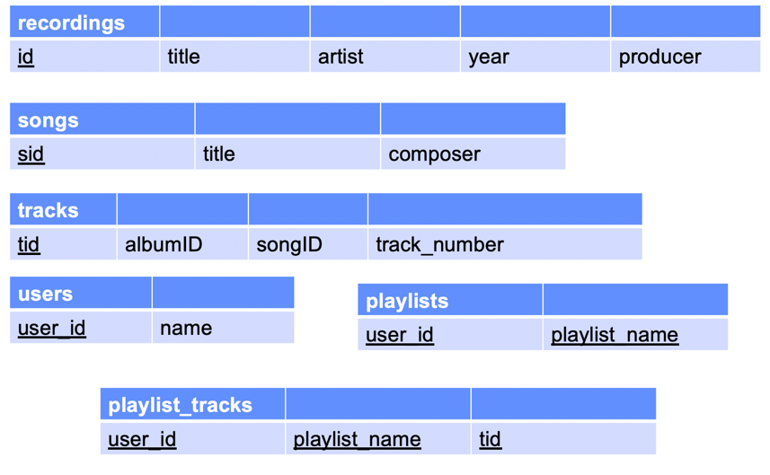

COMP 2404 - Fall 2019 Tutorial 06
Accessing SQLite Data from C++
© L.D. Nel 2019
Description:
In this tutorial we will look at how to access an SQLite database from within your C++ code.
Preliminary:
Verify that you are able to access the SQLite database using its sqlite3.exe console app as you did in the previous tutorial. If necessary review those steps before proceeding with this tutorial.
Problem 1: Compiling SQLite Access Into Your C++ Code:
Download the SQLite Amalgamation from the sqlite.org downloads page https://www.sqlite.org/download.html and unzip the contents.
Copy the extracted sqlite3.h and sqlite3.c files into your directory where you will be writing and compiling your .cpp code files (i.e. add them to the code provided in the demo_code folder).
SQLite is written in C, not C++. So use the gcc C compiler to compile only and object file from sqlite3.c (Notice this is s gcc compile and not a g++ compile.)
$gcc -c sqlite3.c
This should produce an sqlite3.o object file that we can link in with the main.cpp used for the C++ application.
Look at the main.cpp file provided with the demo code it should have contents like the following. Notice it includes the local sqlite3.h file) For what is to follow it's helpful to examine the sqlite.org C interface reference to understand the functions being called: http://www.sqlite.org/cintro.html).
#include <iostream>
#include <string>
using namespace std;
#include "sqlite3.h"
string input; //input from user
sqlite3 *db; //pointer to our database
char * zErrMsg = 0; //pointer to error used by sqlite3
int rc; //return code
int main(void){
cout << "Hello SQLite\n";
//establish connection to database
rc = sqlite3_open("test.db", &db);
if(rc){
cout << "Could Not Open Database: "
<< sqlite3_errmsg(db);
cout << "\nEXITING\n";
return 0;
}
else {
cout << "\nSUCCESSFULLY OPENED DATABASE: ";
}
//close database connection
sqlite3_close(db);
//keep console open until user presses a key
cout << "\n\n" << "Press any key to continue";
getline(cin, input);
return 0;
}
Compile main.cpp by itself like this:
g++ -g -Wall main.cpp
Notice the errors that result because of undefined references (unimplemented functions). That's because the sqlite3.o file compiled previously is not being linked in.
Now compile by linking in the sqlite3.o object file as well including the libraries that were referred to when sqlite3.o was compiled (here we are also including some link options to make things thread-safe and dynamically linkable -these may or may not be needed so include them to be safe):
g++ -g -Wall main.cpp sqlite3.o -lpthread -ldl
This time an a.out should be produced and when run should open a new test.db database.
When you press an key and close the program you should notice a test.db sqlite database file has been created:
You have now successfully connected to a SQLite database.
Problem 2: Adding a Makefile:
Next we will create a makefile to help with the compilation.
Create a makefile with the following contents:
OBJ = main.o sqlite3.o myApp: $(OBJ) g++ -o myApp $(OBJ) -lpthread -ldl main.o: main.cpp g++ -c main.cpp sqlite3.o: sqlite3.c sqlite3.h gcc -c sqlite3.c clean: rm -f $(OBJ) myApp
Verify that you can compile and run your code using this new makefile by executing:
make clean
make myApp
./myApp
Problem 3: Accessing beatles.db Database:
Next lets access the beatles.db sqlite database from our C++ code and print the contents of the recordings table to the console. As a reminder here is the ER model and Schema of the database.
Table Schema of the beatles.db database

Modify the main.cpp to have the following contents. This code connects to the beatles.db database, executes an SQL query on the data, and calls the "callback" function for each row of the resulting answer table. (A version of this file is provided in the demo code as problem3_main.cpp for you to copy and paste from.)
//main.cpp
#include <iostream>
#include <string>
using namespace std;
#include "sqlite3.h"
string input; //user input from console
const char * db_file_name = "beatles.db";
sqlite3 *db; //pointer to our database
char * zErrMsg = 0; //pointer to error returned by sqlite
int rc; //return code
const char * sql = "SELECT * FROM recordings"; //SQL Query String
const char * data = "call back function called"; //passed back on callback;
static int callback(
//callback funtion that will be called by sqlite3_exec() when SQL
//query has completed
void * data, //data provided to sqlite3_exec() [4th argument]
int argc, //Number of columns in answer table row
char ** argv, //array of string representing table row values
char ** azColName //array of strings representing column names
){
//cout << (const char *) data << "\n";
for (int i=0; i<argc; i++){
cout << argv[i] << ", ";
}
cout << "\n";
return 0;
}
int main(void){
cout << "Hello SQLite\n";
//establish connection to database
rc = sqlite3_open(db_file_name, &db);
if(rc){
cout << "ERROR: Could Not Open Database: "
<< sqlite3_errmsg(db);
cout << "\nEXITING\n";
return 0;
}
else {
cout << "\nSUCCESSFULLY OPENED DATABASE: " << db_file_name << "\n\n";
rc = sqlite3_exec(db, sql, callback, (void *) data, &zErrMsg);
if( rc != SQLITE_OK) {
cout << "ERROR EXECUTING SQL: " << zErrMsg;
sqlite3_free(zErrMsg);
}
else {
cout << "\nSQL QUERY SUCCEEDED\n";
}
}
//close database connection
sqlite3_close(db);
//keep console open until user presses a key
cout << "\n\n" << "Press any key to continue";
getline(cin, input);
return 0;
}
Compile and debug the new main.cpp. Once it runs successfully you should see the entries in the beatles.db recordings table printed to the console by your C++ code:

Problem 4: Executing User SQL Querys
Next we want to allow the user of our C++ app to type in an SQL query and have it run against the beatles.db database. We have provide a problem4_main.cpp that should do this. Study that code and the main.cpp file to match that contents. With this code try running some SQL queries against with your app. (Notice when the user types their SQL it does not seem to matter whether they end with a semi-colon or not -why is that?)
Here is some sample output:

Look through the SQL documentation on the sqlite.org website and compose try different queries against the beatles.db database.
When you have completed these exercises show your work to the TA's to get credit for the tutorial.